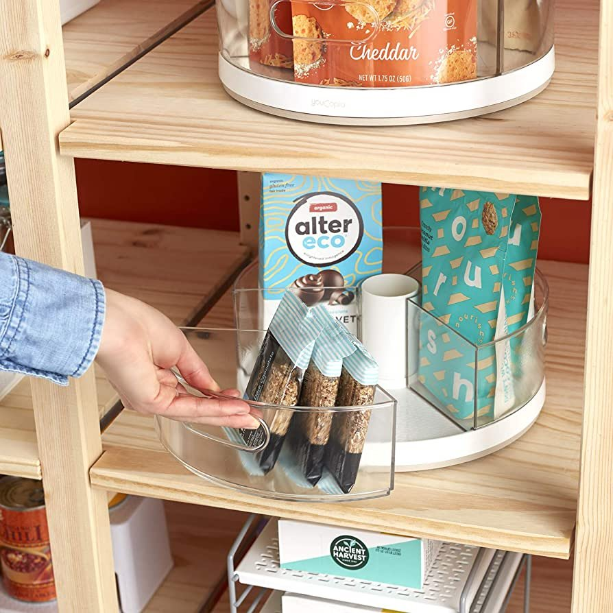
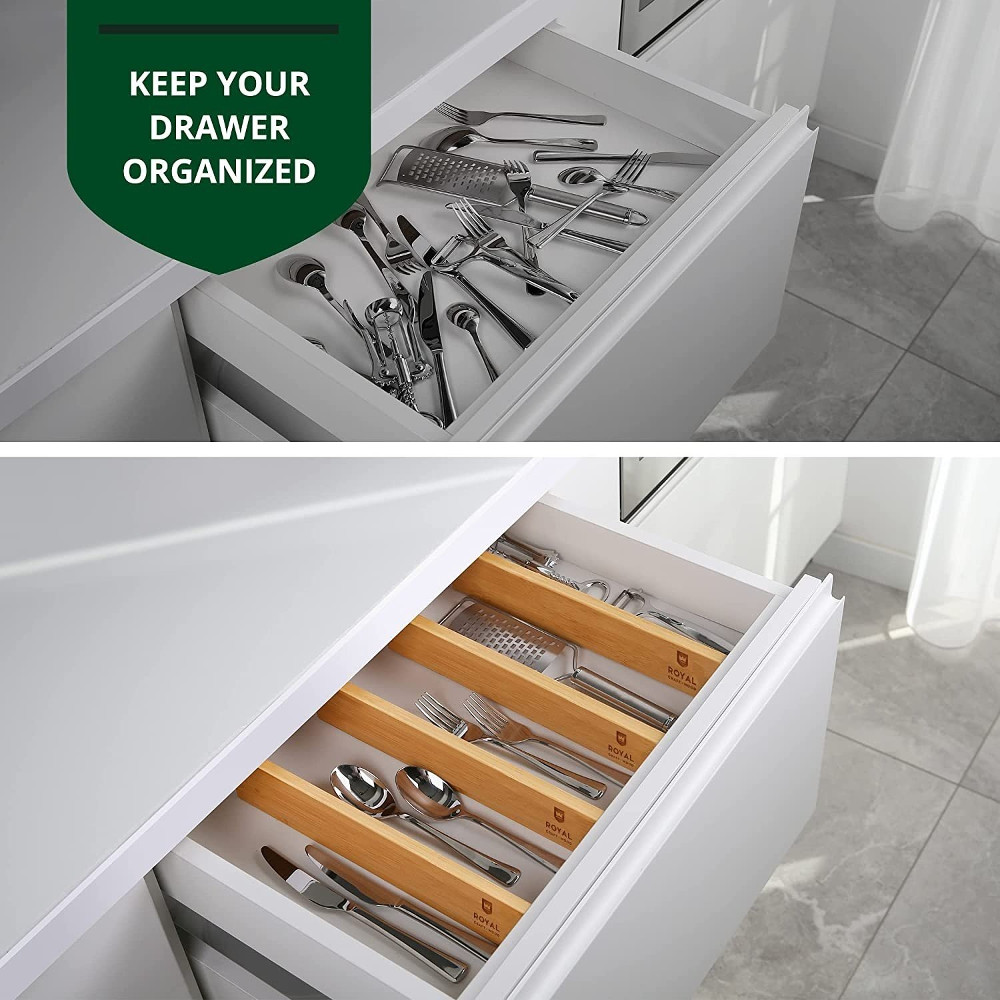
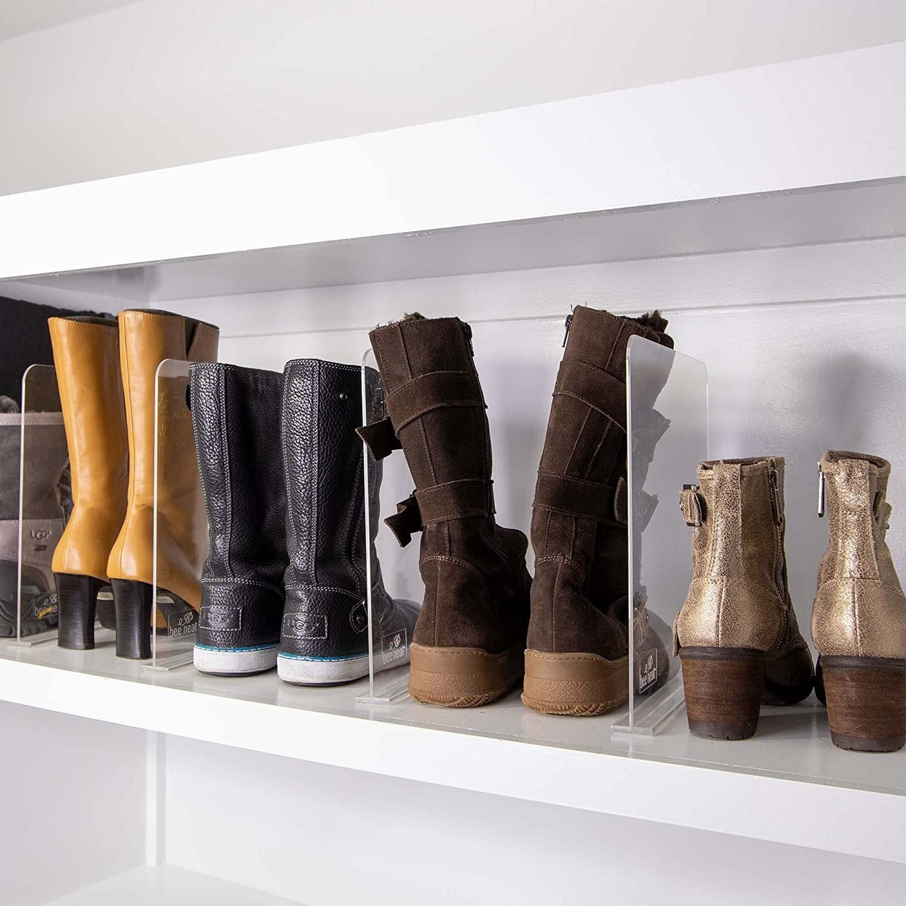

Top 3 Favorite Organizing Products
Without question, my favorite organizing product would be the Lazy Susan. It’s such a versatile product. Whether you need to find a solution to the chaos under the kitchen sink, canned goods in the pantry, a Lazy Susan is the perfect product for your organizational needs. To paint the picture, your pantry is overflowing with food because it’s so full. The cupboards are deep, but things get lost in the back. Eventually, to be thrown away. Enter YouCopia’s handy dandy Lazy Susan.
Step one- clear the pantry.
Step two- purge all expired products you will not use again.
Step three- categorize.
Step four- visually arrange the pantry in a way that suits the space and your needs best.
Step five- insert organizing products as needed (AKA the famous Lazy Susan).

What usually works best when you have a deep cabinet is implementing a couple Lazy Susans, in order to maximize space. You can put one to the left and the other to the right side of the cabinet, allowing you to turn the Lazy Susan and access everything you need from the back of the cabinet. As well as, the items in the front. You could also use a Lazy Susan in the back and put a basket in front. So that when you need to access the things in the back you simply take out the one basket and turn for what you need. That being said, there are limitless areas of the home that could utilize a Lazy Susan. There’s a variety of sizes and even ones with dividers to keep smaller things separate. Take a spin with a Lazy Susan you won’t be disappointed.

Another organizing product that we would highly recommend would be drawer dividers. Again this product is extremely versatile. They are great when organizing drawers in the kitchen or clothes in your drawers. It will keep everything uniform and in place. For example, we use them in my dresser. We like to divide shirts by style. They run vertically in drawers and each row is a different style shirt; tank top, short sleeve, and long sleeve. Pro tip: When folding clothes, we fold them like a taco fold. I place them in the drawer standing up so you can immediately see everything. This is extremely important because it reminds us of what we have. Therefore, we will use what we have more often. Overall, the drawer dividers are every organizer's dream product. They are easy to use and they come in multiple lengths, colors and material. Keep every drawer in your home organized with a drawer divider!

Lastly, we would recommend shelf dividers. Are you a person who has many purses and bags? How do you store them now? Are the stuffed in your closet or basket never to be seen or used again? I’m telling you that shelf dividers are the solution for you! They are very easy to use. You simply clip them onto the shelf. They are adjustable (fit most shelving), they come in different colors (clear, white, black) and material (acrylic or metal). We usually use them to separate purses in a closet, but they can also be used to separate clothing, towels, and books.